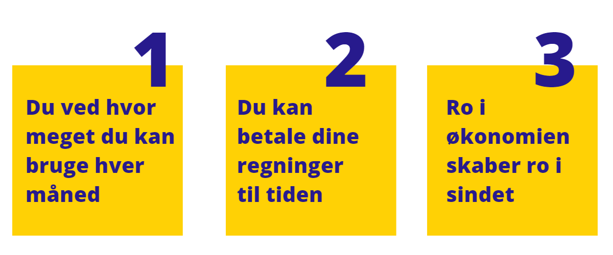
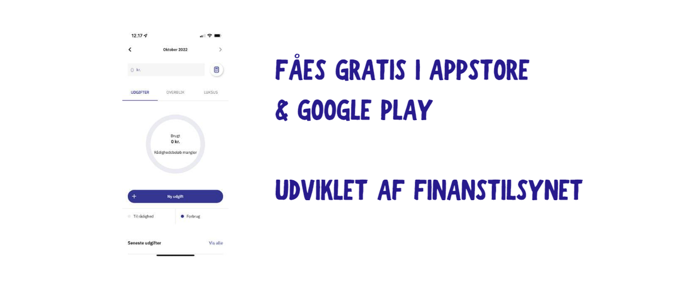
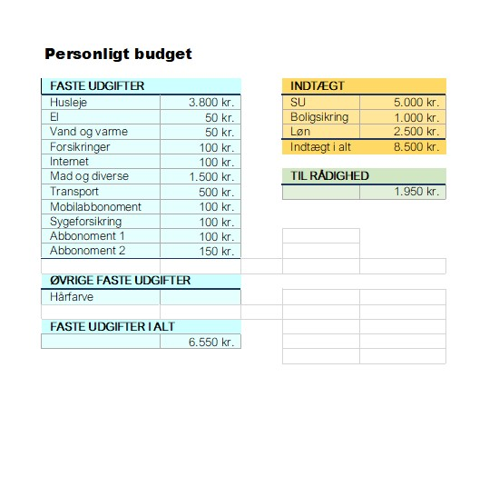

Har du besluttet dig for at lægge budget? Så læs med her.
Der er ikke mange negative sider ved at ligge budget. Det er rigtig vigtigt for mange danskere, og det kan hjælpe dig med at lægge penge til side og spare op til det du virkelig ønsker dig. Så hvordan gør man?
Faste indkomster
nævn kun de indkomster du kan regne med hver måned. Disse vil typisk være…
- SU
- Boligsikring / Boligstøtte
- Løn
Faste udgifter
Derefter skal du skrive alle dine udgifter til din bolig. Sørg for at udspecificere dem så du altid kan vende tilbage til dit budget, og huske hvad de betød.
Det varierer fra lejlighed til lejlighed om du betaler el, vand og varme gennem huslejen.
Disse vil typisk være
- Husleje
- El, vand og varme
- Forsikringer
- Internet
- Mad og diverse
Til sidst skal du skrive de udgifter ind, som mangler. Vær opmærksom på at vi ikke har talt bil, kæledyr, lån osv. Med. Du kan altid tilføje disse poster i dit budget.
- Buskort
- Abbonomenter
- Mobilabbonoment
Nu har du et overblik over alle faste indtægter og udgifter. Når du trækker disse fra hinanden, vil du have dit ”til rådighedsbeløb”. Det er en god ide at lægge penge til side, hvis du ved at du har nogle faste store køb fra tid til anden. Det kunne fx være
- Hårfarve
- Medicin
- Rejseopsparing
Det altid en god ide at lægge penge til side. På den måde sikrer du dig selv mod negative økonomiske overraskelser. Men på SU kan dette være svært at opnå. Derfor er det altid en god ide at tænke forud. Så når du har penge til overs, så øv dig i at lægge dem til side. Eller lad vær, og brug dem på at tage ud, feste og opleve ting. Du har jo styr på dine udgifter når du har lagt et budget!
Hold budgettet ved lige
Det er vigtigt at du en gang imellem kigger på dit budget. Det kan være en gang om måneden. Nogle trives i at skrive alle ting ned de køber. Andre vil gerne have lov til at bruge de penge, de har til overs på lige det de vil. Hvis du gerne vil holde et overblik, kan du med fordel bruge appen Lommebudget.
Apps til budget og økonomi
Lommebudget er en app hvor du nemt kan tracke dit forbrug fra mobilen. Du skal bare skrive dine faste udgifter og indtægter ind hver måned. Så kan du indberette dine småbeløb løbende, og på den måde holde styr på hvad du bruger. Det er smart!
Spørg banken
Husk at brug din bank, når du har brug for det. De kan også hjælpe dig med at lægge et budget, hvis du har svært ved at finde rundt i det. Det er gratis at spørge om råd, fordi din bank låner af din opsparing.
